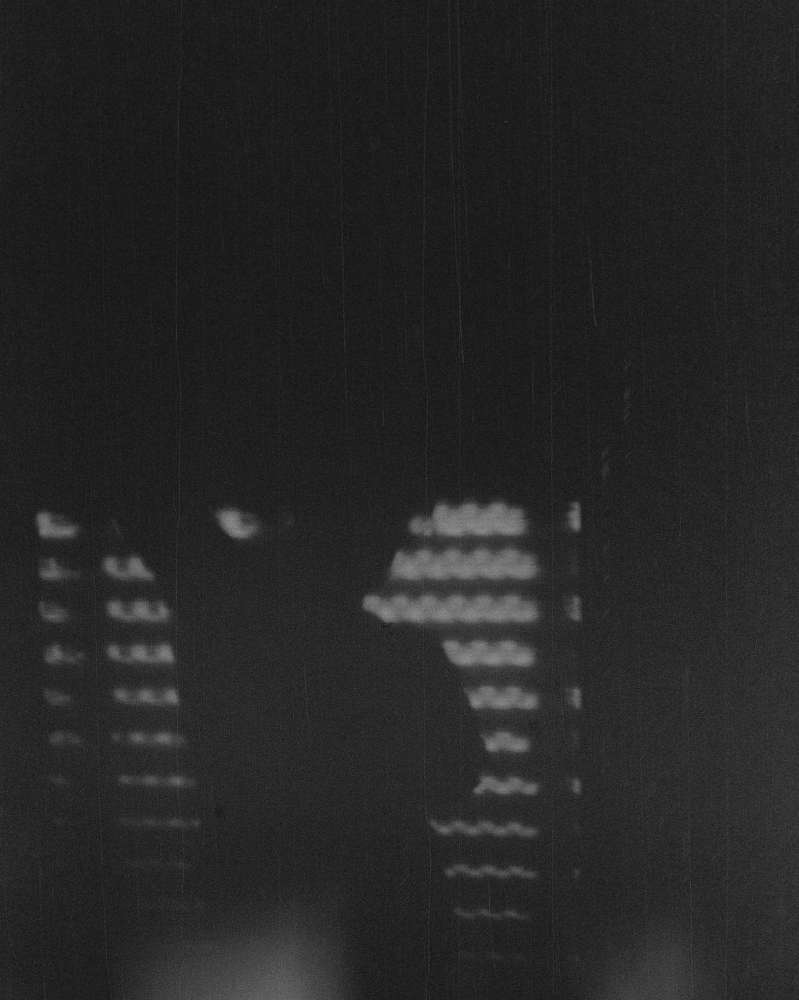

info
info
X

DCC-FCUP ∣ LIACC
functional programming, λ-calculus, substructural type systems, operational semantics & compilers.
publications
publications
X
Short papers
2024
Linear Calculi for Programming Languages: a comparison approach
Ana Jorge Almeida, Sandra Alves, Mário Florido
INForum: Informatics symposium
MSc Thesis
2024
Linear Calculi: a comparison approach
Supervised by Mário Florido and Sandra Alves
Ana Jorge Almeida